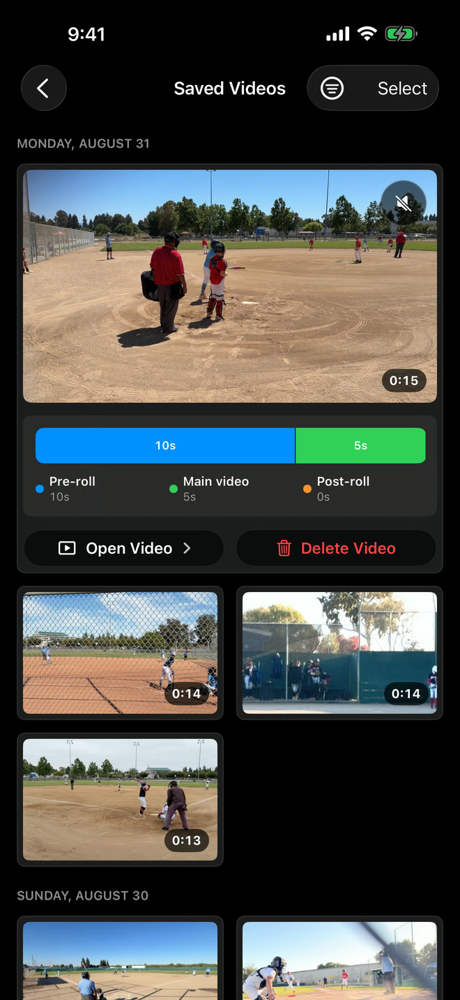

Before Sideline Save, I recorded my son’s games with the built-in Camera app on my iPhone. The camera itself worked great. The problem was that it required me to decide what was worth recording before anything happened.
At a baseball game, that meant starting a new video before pitch after pitch. Most pitches did not turn into plays I wanted to keep. I would record, stop, and then do it all over again because the next pitch might be the one. By the end of a game or tournament, I had accumulated a long list of short videos, and most of them were videos I would eventually delete.
That cleanup became part of the routine. I would scroll through nearly identical thumbnails, open each video to see what happened, keep the handful that contained a hit or another memorable play, and delete the rest. Until I did, all of those unwanted videos took up space and made the good ones harder to find.
But choosing not to record every pitch carried its own risk. The one time I waited could be the time something great happened. That tension — record everything or risk missing the moment — was why I decided to write my own camera app.
The main insight: only save videos after something worth recording happens
The fundamental problem with recording youth sports is that I usually do not know a play is worth saving until it has already begun.
When my son is batting, I do not know which pitch he will hit. When the ball is put into play, I do not know whether it will become a routine out, a close play, or something we will want to watch years later. By the time I recognize the moment, the pitch and swing have already happened.
A rolling video buffer seemed like the answer. The camera could keep the most recent action temporarily available without saving every second as a permanent video. Once something interesting happened, I could choose to keep it, and the finished clip could still include what happened before I pressed the button.

I tried other apps that offered some form of buffering, but they did not quite fit what I wanted. I did not just want a generic camera with a buffer attached. I wanted an app that understood the context I was in: standing on the sideline, trying to capture a short clip from a game in a specific sport.
That context affects how I record, how long I want the camera to remember, and how I want to find the video later. I wanted the entire experience to be designed around capturing youth-sports highlights, rather than treating sports as one possible use of a general-purpose camera.
My first version still put the play on a timer
My first attempt solved only part of the problem.
In the original version, I chose a fixed total duration for the finished video. When I decided to save a moment, the app combined the buffered action with a predetermined number of additional seconds. Then the clip ended automatically.
That sounded sensible when I was designing it. A fixed duration kept every video short and removed the need to press another button. But real games quickly exposed the flaw: plays do not follow a timer.
I remember capturing a big play and then watching the recording end while the celebration was still happening. The main action was there, but the clip stopped before the moment actually felt over. The reactions afterward were part of what I wanted to remember, and the app had decided to cut them off.
Making the timer longer was not a real solution. A longer duration might capture the end of one play, but it would leave unnecessary footage on another. No single number could reliably describe how long a meaningful moment lasts.
Around this time, I also started getting feedback from my initial beta users. That feedback showed me that some of the concepts I had become comfortable with while building the app were not clear to everyone else. Words like “buffering” made sense to me as a developer, but they could be confusing to someone who simply wanted to record a game.
People should not have to understand how a video buffer works to use the app. The experience needed to communicate a much simpler idea: wait until something worth recording happens, then save the whole moment, including its beginning.
Those two lessons led to the two-action design Sideline Save uses now. I press the first button when a play becomes worth saving. The app preserves the action that led up to that decision. I press the second button when the play, along with anything I want to capture afterward, is actually over.
The app helps me recover the beginning, but it lets me decide where the memory ends.
Then my son hit his first travel-baseball home run
The moment that made the idea feel real was my son’s first home run in travel baseball.
I could not know before the pitch that this would be the one. That was the entire problem I had been trying to solve. Once the ball was hit and I realized the play was worth keeping, I was able to save it without ending up with another recording that began too late.
The finished video preserved the beginning of the play, not just the part after I reacted. And because I controlled when the recording stopped, I could keep the rest of the moment too.
That clip was more than proof that the technology worked. It was a video of something important to my son and to me. It was exactly the kind of family memory I had wanted to capture when I started working on the app.
It also clarified what I was building. Sideline Save was not an abstract camera experiment anymore. It was a way to preserve unpredictable moments without filling my camera roll with every uneventful pitch that came before them.
Real games shaped the app I wanted to use
Sideline Save has changed because I use it in the same setting it was designed for. Ideas that seem reasonable while I am developing the app sometimes feel very different once I am standing beside a field and the next play is about to begin.
That is why I keep coming back to simplicity. I need to be able to operate the app quickly without working through a complicated capture process. When something happens, the decision should be straightforward: this play is worth keeping.
It is also why I am focused specifically on youth sports. Different sports create different recording situations. The useful amount of video before a baseball swing may be different from what I want before a scoring play in soccer. The framing I use and the way I look for clips afterward can be different too.
I want the app to reflect that context. Sideline Save remembers settings for each sport and organizes saved clips by sport, so the videos I chose to keep do not end up in another undifferentiated list. The goal is not merely to capture fewer videos. It is to make the meaningful ones easier to find and enjoy later.

I built Sideline Save to scratch my own itch
I wrote Sideline Save because I wanted it for myself. I was tired of recording every possible play, deleting most of the results, and still worrying that the one time I did not press record would be the moment I wanted to keep.
The app started with a simple idea: let me recognize the good play after it has begun without losing its beginning. Using it at real games has continued to shape what that idea means in practice.
Now I am sharing Sideline Save with other youth-sports parents who face the same problem. I expect their experiences will uncover things I have not considered, just as my own time at the field changed the original design.
If you try Sideline Save, I would love to hear what works, what does not, and what would make it better for the games you record.